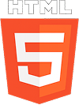
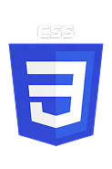
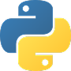
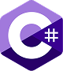
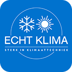
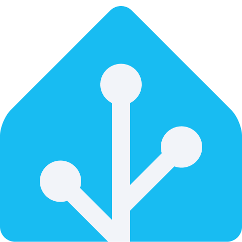

Wie ben ik
Hallo, ik ben Lucas Franken, een gemotiveerde ICT-student aan Windesheim in Zwolle. Ik ben iemand die graag blijft leren, nieuwe dingen uitprobeert en zichzelf continu wil ontwikkelen binnen de IT.
Codetalen
Ik heb ervaring met HTML, CSS, Python en C#. Mijn focus ligt vooral op webdevelopment, maar ik laat met deze talen zien dat ik ook breder inzetbaar ben en snel nieuwe technologieën oppak wanneer dat nodig is.




Opleidingen
- MBO Software Development Landstede
- HBO ICT Windesheim Zwolle (huidig)
Tijdens mijn opleidingen heb ik een sterke technische basis opgebouwd en leer ik steeds meer over professionele softwareontwikkeling.
Stage- en werkervaring
Ik heb stage gelopen bij Raion Design, een bedrijf dat zich voornamelijk richt op het ontwikkelen van websites met WordPress. Momenteel werk ik bij Echt Klima, waar ik onder andere verantwoordelijk ben voor werkzaamheden aan de website.

Softskills
Tijdens mijn MBO-opleiding heb ik meerdere keren de rol van Scrum Master vervuld. Hierdoor heb ik ervaring opgedaan met communicatie, samenwerken en leiderschap. Binnen mijn huidige HBO-opleiding worden deze vaardigheden verder ontwikkeld en versterkt.
Hobby's
Tijdens mijn studie heb ik aan verschillende projecten gewerkt, zowel individueel als in teamverband. Deze projecten variëren van kleine webapplicaties tot grotere softwareoplossingen, waarbij ik mijn vaardigheden in coderen, probleemoplossing en samenwerking heb kunnen ontwikkelen.

Projecten
Ik heb aan meerdere projecten gewerkt die mijn vaardigheden en groei laten zien. Projecten zijn te bekijken via de knop hieronder.